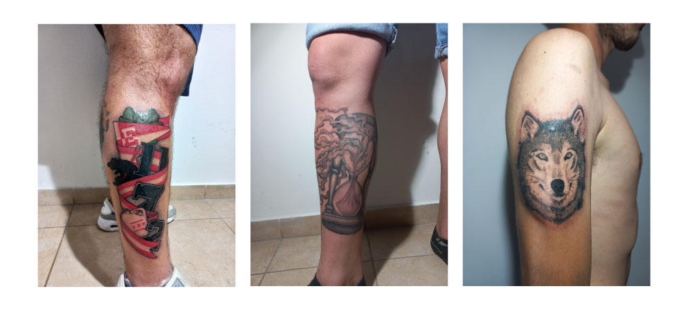

Me gusta mucho los trabajos en blackwork (solo tinta negra), y tambien los trabajos a color. El color rojo es un color que me gusta mucho como convina con cualquier tipo de piel. Aca vemos algunos trabajos de linea fina, sombra y relleno a color.
En estos otros trabajos, podemos ver otros estilos, como el ralismo y algunos diseños personalizados, donde trato de combinar la linea fina con el relleno y la sombra a puntillismo de arrastre (es una tecnica de sombreado, donde se busca conseguir una textura de puntos).
Este video es de uno de mis mayores referentes, no solo en cuanto al tatuaje , si no que tambien en el estilo. Jason, es uno de los tatuadores que logro que el puntillismo de arrstre,(tecnica de textura de puntos que explica en el video), gane peso en la industria.
Daniel Silva, es otro de mis referntes. En este caso en cuanto a la prolijidad, la perfeccion y el detalle. Ni hablar de la linea fina, simplemente sorprendente.
Oozy Real, es un tatuador de origen coreano. Mas que un referente es un tatuador que admiro por la facilidad con la que aplica la tecnica de puntillismo de arrastre Aunque mas lo admiro por los diseños que compone.
Espero que les haya gustado saber un poco de mi, a que me dedico y cuales son mis referentes en mi labor. Sin mas que agregar, Muchisimas gracias por el tiempo!